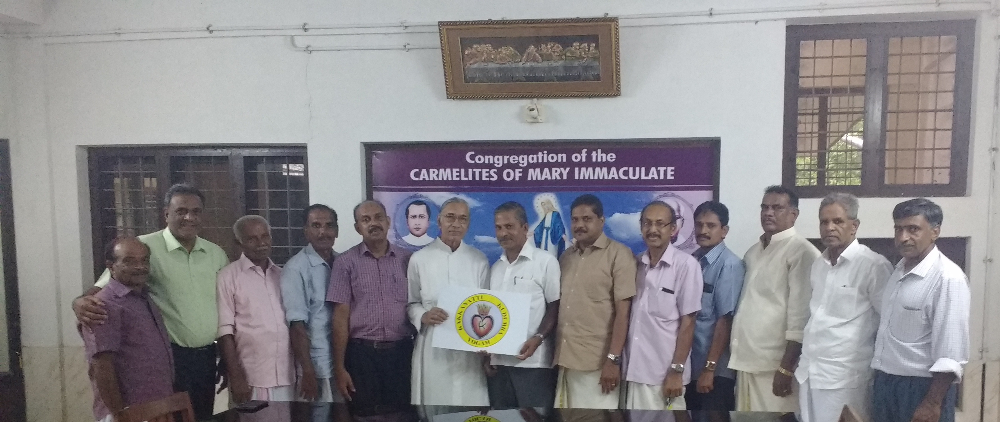

Who we are?
During the first half of the 18th century, Mathulla of Kochukakkanattu hailing from Pakalomattam family at Kuravilangadu, is said to have settled at Mylacombu – a Christian centre. Gradually the adjective ‘Kochu' disappeared from his family name and he was named Kakkanattu Mathulla. He was the predecessor of the Kakkanattu family settled in the nearby places of Mylacobu, mainly at Kumaramangalam and Uriyarikunnu, lter shifted to places centering Nakapuzha, Ayavana and Nellimattam. At present it has its wings at kadalikadu, Avoli, Kavakkadu, Kuttampuzha, High-ranges, Malabar and various places in and outside Kerala and abroad as well. Kakkanattu family is blessed with 14 priests and 58 nuns doing services in various congregations.

The kakkanattu family of Mylacombu moved on to other places are known by different family names – Thymattathil, Neernal, Vazhappithil, Karotte Kakkanattu and Thazathe Kakkanattu Centering Nakapuzha ana Moolekudiyil centering Avoli. They are brancehed out as Edasseril Chayananickal, Pazhaplackal, Tharpakudiyil also. The descendants of Kora Mathulla moved on to Ayavana are manily known by the famil names Kakkanattu, Kuravakkattu and Manikuzhyil. They are also known by the family names Puthenpura, Thuruthel, Kizhakkel and Parakandathil. Kurian Mathulla of Ayavana Kuravakkattu moved on to Nellimattom and his descendants are mainly known as peechathu Kakkanattu, Kunnapilly, Kurickamolel, Paalakudy, Udukudy and Kodakkanal. The descendants of Kora and Ouesph-sons of Paily Kunjukora of Ayavana settled at Nelimattam known as Pulikayathu family also is included in Nellimatttam unit.